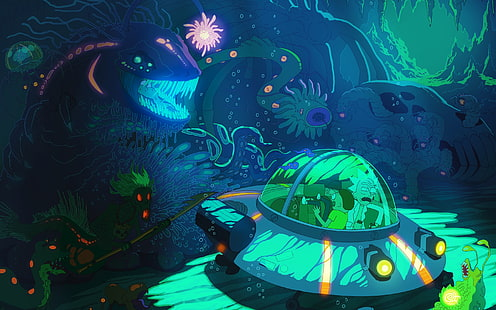

About Rick and Morty
Rick and Morty are awesom! They do crazy science stuff. Rick, an alcoholic sociopath and scientist,live with his daughter Beth's family. apart from building gadgets, he takes his morally right but dimwit grandson Morty on absurd intergalactic adventures.
Rick and his grandson Morty
Rick and Morty Characteristics
- Rick is a great scientist
- Morty always stay with Rick
- They always do cool Adventure
- Morty and Rick always save each other and help each other
Rick and Morty's Family
Rick and Morty has weired Family,they support them in there little science adventure and Morty's father don't allow Morty to hangout with his grandfather because of his weired experiment's. Click on the links below to read more about them